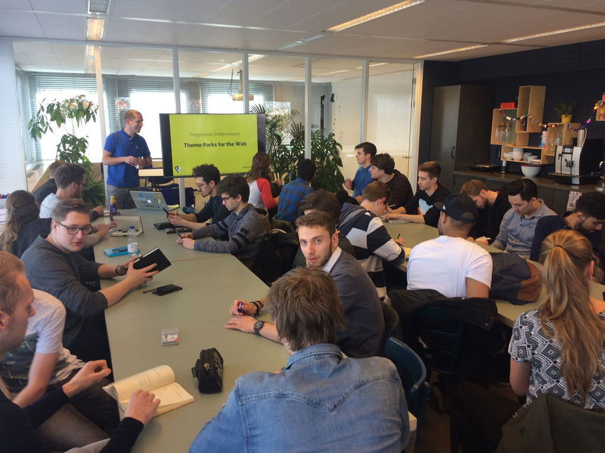
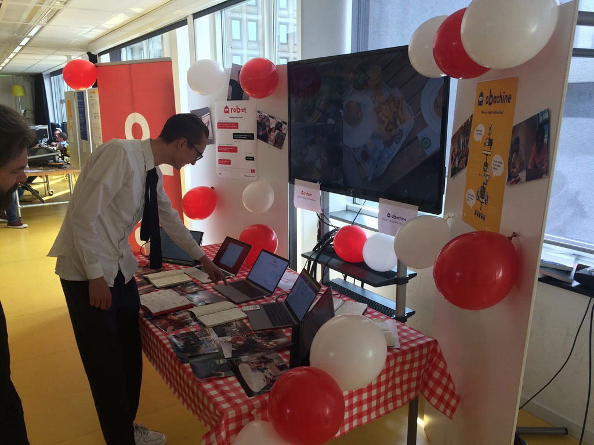
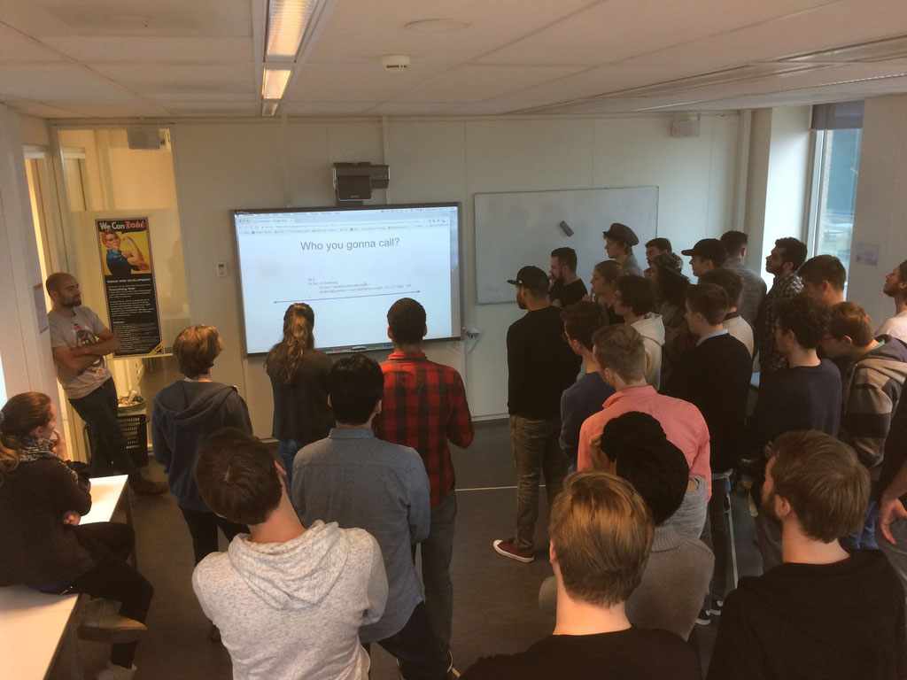
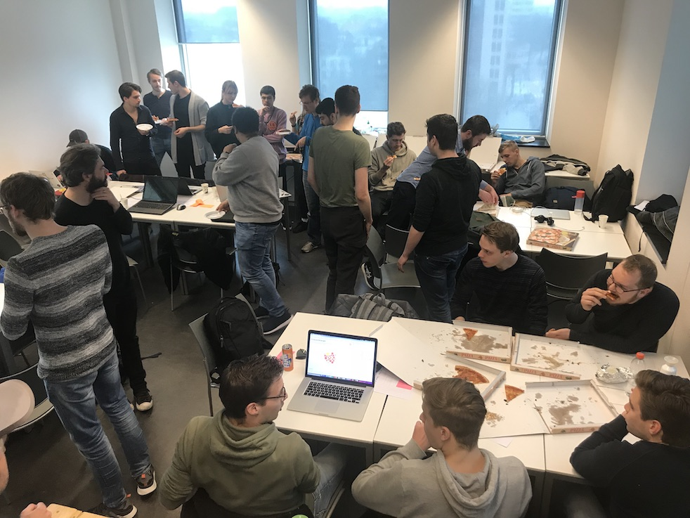

Introductie
In de minor Web Design & Development leer je interactieve toepassingen maken met HTML, CSS en JavaScript. In verschillende vakken en projecten leer je over browsers, het ‘real time web’, performance, rapid prototyping, usability, documenteren, versiebeheer, debuggen, testen, responsive, reactive, micro interacties, API’s en … het web.
De minor wordt aangeboden door de opleiding CMD van de Hogeschool van Amsterdam. CMD Amsterdam is een ontwerpopleiding digital design met drie focuspunten: interaction design, visual design en frontend development. De minor sluit aan bij het profiel frontend developer.
Impressie
Weekly Nerd bij De Voorhoede
Meesterproef presentatie
Kennismakingsquiz 'over de streep'
Hackathon bij de master Digital Design
Is deze minor voor jou?
Samen met bedrijven uit de creatieve industrie verkennen we de grenzen van wat er mogelijk is op het web.
Van studenten wordt verwacht dat ze gedegen kennis hebben van HTML, CSS en JavaScript. Hier kun je lezen wat je van deze web technologieën moet weten en hoe je je kan voorbereiden.
Ben je leergierig en nieuwsgierig? Gedreven en zelfredzaam? Heb je affiniteit met techniek of wil je je technische (design) skills verdiepen? Droom je van Real time, Responsive en Reactive? Of misschien wil je dat leren? Dan is deze minor voor jou!
Deze minor is ook geschikt voor Visual Interface Designers en Interactie ontwerpers die alles willen weten over het web, over toegankelijkheid, én over hoe code van invloed is op het ontwerpen en maken van websites.
Werkwijze
In de minor werken we in een studio model. De minor heeft een vast lokaal waar de lessen worden gegeven. Van studenten wordt verwacht dat ze in het lokaal blijven werken zoals je dat ook in een bedrijf zou doen. De werkbelasting is full-time, 40 uur per week. Iedere dag zijn er docenten en assistenten aanwezig om studenten te begeleiden en vragen te beantwoorden.
In de minor worden 2 vakken tegelijk gegeven met wekelijkse opdrachten en beoordelingen. Een blok vakken duurt 3 weken en wordt afgesloten met een projectweek. Aan het eind van de minor volgt een Meesterproef van 5 weken. Voor de Meesterproef ontwerp en maak je individueel of in een team een project voor een opdrachtgever. Elke week wordt een Weekly Nerd georganiseerd, een serie presentaties, workshops en bedrijvenbezoeken zodat je je kan orienteren op het werkveld.
Lesprogramma
In een half jaar krijg je 6 vakken en 4 projecten. De vakken hebben een focus op techniek en JavaScript, of richten zich meer op design en interactie met HTML en CSS.
Web App from Scratch
In het vak Web App from Scratch ga je een web app maken zonder frameworks of onnodige libraries, dus zoveel mogelijk met native HTML, CSS & JavaScript. Je leert hoe je structuur aanbrengt in je code en hoe je hiermee 'from scratch' een web app maakt. Met deze kennis begrijp je beter hoe bestaande api’s, libraries en frameworks werken.
Het vak wordt gegeven door Joost Faber en Suus ten Voorde (Digital Strategist & Front-end Developer).
Hier staat het lesprogramma van Web App from Scratch van studiejaar 1920 met de opdrachten en de resultaten van de studenten.
Progressive Web Apps
In het vak Progressive Web Apps leer je hoe je een website kan ombouwen naar een server side gerenderde applicatie. Met een reeks van optimalisaties gaan we de performance van de applicatie te verbeteren. Uiteindelijk zorgen we ervoor dat de applicatie offline beschikbaar is.
Dit vak wordt gegeven door Joost Faber en Declan Rek (de Voorhoede).
Hier staat het lesprogramma van Progressive Web Apps met de opdrachten en de resultaten van de studenten.
Real-Time Web
In het vak Real-Time Web leer je real-time applicaties maken met Nodejs. Je leert hoe je real-time data op een inzichtelijke manier toegankelijk kunt maken.
Dit vak wordt gegeven door Justus Sturkenboom en Guido Bouwman(Q42).
Hier staat het lesprogramma van Real-Time Web met de opdrachten en de resultaten van de studenten.
CSS to the Rescue
In het vak CSS to the Rescue ga je meer leren over CSS dan je al weet. Je gaat goed werkende responsive oplossingen bedenken én maken voor complexe interfaces. Met een goed begrip van CSS kan je het laten doen wat jij wil, en dat is nodig om webpagina’s te maken waar mensen blij van worden.
Dit vak wordt gegeven door Vasilis van Gemert en Sanne ’t Hooft.
Hier staat het lesprogramma van CSS to the Rescue met de opdrachten en de resultaten van de studenten.
Browser Technologies
In het vak Browser Technologies leer je hoe je goede, robuuste, toegankelijke websites maakt. Je gaat leren over Progressive Enhancement, Feature Detection en Fallback. Het web is er voor iedereen, in dit vak leer je hoe je daarvoor kan zorgen.
Dit vak wordt gegeven door Koop Reynders en Peter Paul Koch (CSS Day).
Hier staat het lesprogramma van Browser Technologies met de opdrachten en de resultaten van de studenten.
User-Centered Design
In het vak User-Centered Design leer je hoe je verschillende interface principes kan toepassen. Dit vak richt zich op de gebruiker en hoe je die aantrekkelijke, duidelijke en een prettige interface kan aanbieden die doet wat die moet doen.
Dit vak wordt gegeven door Vasilis van Gemert en Koop Reynders.
Hier staat het lesprogramma van User-Centered Design met de opdrachten en de resultaten van de studenten.
Project 1 - Prototype for concept
Een case waarin je gaat toepassen wat je bij de vakken Webapp from Scratch en CSS To The Rescue hebt geleerd.
Opdrachtgever: OBA
Project 2 - Solve, debug & optimize
Case waarin je gaat toepassen wat je bij de vakken Progressive Web Apps en Brower technologies hebt geleerd.
Opdrachtgever: Mirabeau
Project 3 - Design for Real-Time
Case waarin je gaat toepassen wat je bij de vakken Real-time web en Web of things hebt geleerd.
Opdrachtgever: Lifely
Meesterproef - Case voor een opdrachtgever
In de meesterproef laten studenten zien wat ze allemaal hebben geleerd. Er worden een aantal projecten (voor echte opdrachtgevers) aangeboden waar studenten in 5 weken een oplossing voor een probleem moeten verzinnen en maken.
Weekly Nerd
Elk week wordt een Weekly Nerd georganiseerd en krijg je een serie presentaties en gastcolleges uit het werkveld.
Toelatingseisen
Voor de minor Web Design & Development is het belangrijk dat je gedegen kennis hebt van HTML, CSS en JavaScript, en dat je al een aantal vakken en/of projecten hebt gevolgd over web development en web design. In de minor gaan we meteen volle kracht vooruit met de vakken Web Apps From Scratch en CSS to the Rescue …
Lees hier meer over de toelatingseisen van de minor en hoe je je kan voorbereiden.
Aanmelden
De minor Web Design & Development heeft plek voor maximaal 46 studenten. Eind september kun je je op SIS inschrijven voor de minor.
Als je niet op de HvA zit dan kun je vanaf november inschrijven op Kies op maat.